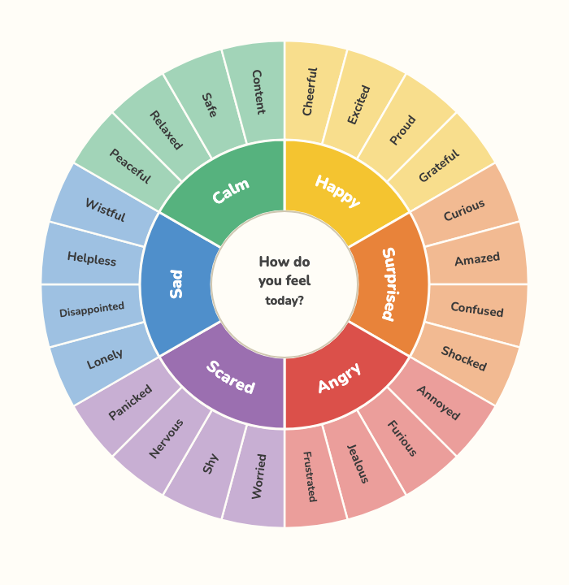
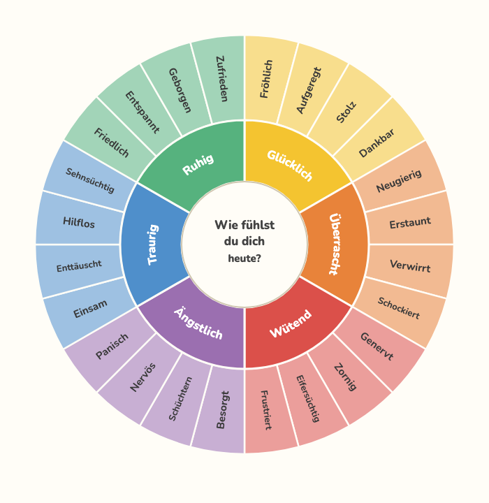
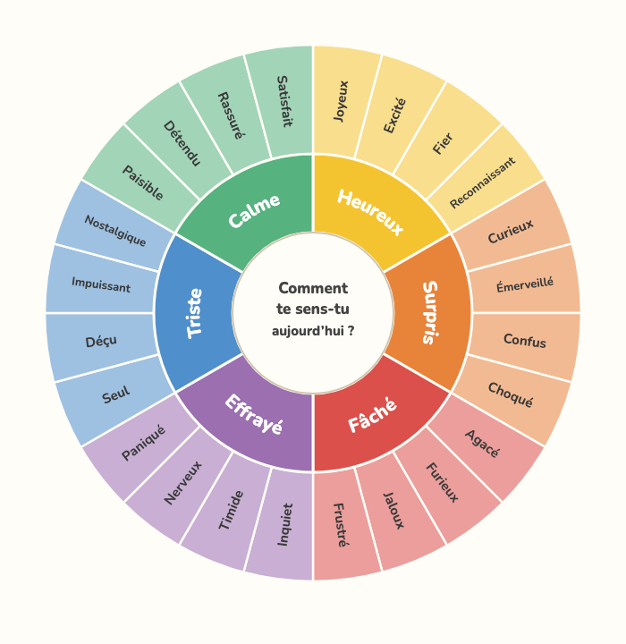
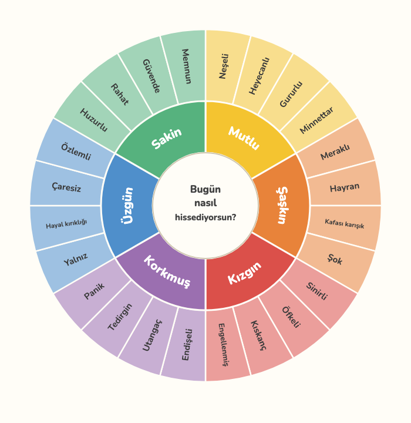

Download your language

Deutsch
Español

Français

Türkçe
How to use it 💛
- Print the PDF on A4 at 100% (“Actual size”). Two pages: the wheel and a monthly tracker.
- Find the core emotion in the middle that fits, then move outward to a more exact feeling in the same color.
- Say it out loud and talk about when you felt it — there is no wrong feeling.
- Color one circle a day on the tracker to see the week at a glance.
Free & open source
See how it’s made, suggest improvements, or help with translations.
⭐ View on GitHub 🌍 Add your language 💬 Ideas & feedback